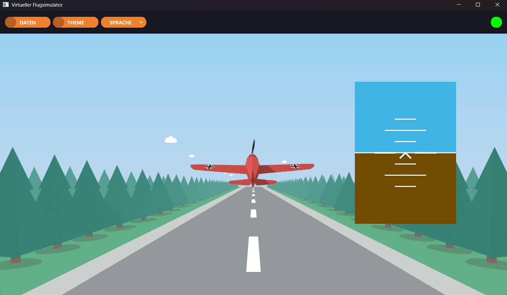
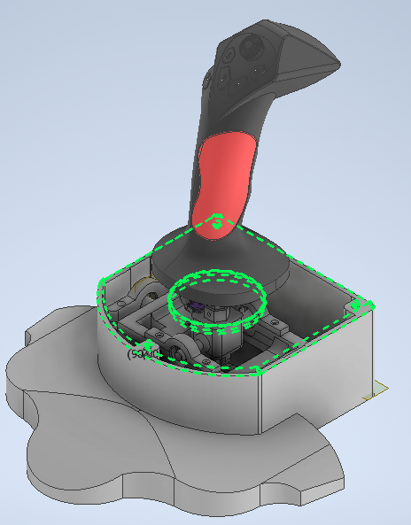

Wprowadzenie
Dokumentacji projektu Symulator Wirtualnego Kokpitu. Aplikacja została stworzona w oparciu o framework Qt (C++) i służy do wizualizacji symulacji lotu obiektu. Programu komunikuje się z zewnętrznym kontrolerem opartym na platformie STM32, którego mechanizm działania polega na pomiarze kątów wychylenia drążka w dwóch osiach. Aplikacja przetwarza surowe sygnały w modelu matematycznym oraz graficzna reprezentacja położenia obiektu w przestrzeni.
Główne moduły i funkcjonalności
- Komunikacja sprzętowa: Niskopoziomowa komunikacja z zewnętrznym kontrolerem, zaimplementowana z wykorzystaniem portu szeregowego nadzorowana przez klasę ControllerManager.
- Fizyka i Kinematyka: Model matematyczny (FlightMathModel) odpowiadający za inercję lotu oraz funkcję autopoziomowania (auto-leveling) dla osi przechylenia i pochylenia.
- Sztuczny Horyzont: Wizualizacja lotniczego wskaźnika położenia zaimplementowanego w klasie VirtualHorizon.
- Wizualizacja Lotu: Renderowany dynamicznie obszar symulacji z modelem samolotu i zmieniającym się otoczeniem (SimulatorArea).
- Analiza Telemetrii: Generowanie wykresów w czasie rzeczywistym na podstawie historii lotu na ekranie FlightDataArea.
- Responsywny UI: Modułowy interfejs z obsługą różnych motywów kolorystycznych oraz dynamiczną zmianą języka.
Galeria
Poniżej znajduje się wizualizacja działającego środowiska oraz schemat kontrolera lotu:

Widok głównego ekranu symulatora z wirtualnym horyzontem

Projekt zewnetrznego kontrolera do symulacji
O autorze
Autor: MD Wersja: 1.0 Technologie: C++, Qt Framework, Doxygen Urządzenie zewnętrzne: Kontroler na platformie STM32 (komunikacja UART)
 1.16.1
1.16.1